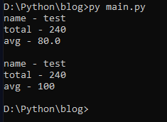
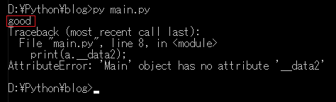
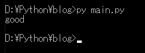
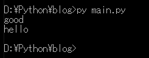
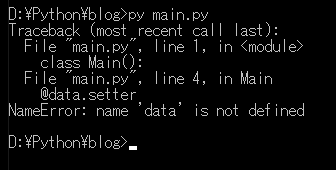
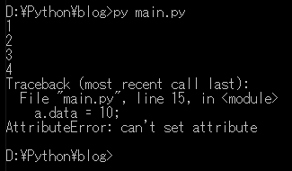

[Python] 14. クラスプロパティ(Property)
こんにちは。明月です。
この投稿はPythonのクラスプロパティ(Property)に関する説明です。
まず、クラスのプロパティはクラス内部変数を参照するような関数の意味です。 普通はゲッター(getter)、セッター(setter)という時もあります。
クラスを生成する時に内部メンバー変数をpublicタイプで生成することはできますが、OOPのカプセルの特性でクラスの内部メンバー変数を直接に参照することはよくないです。(Pythonは別にOOPプログラム言語ではないですが。。。)
なぜなら、クラスを生成する理由はオブジェクトの意味を合わせて作った変数がクラスですが、直接に変数を参照することになるとクラスの意味がなくなることです。
# 成績を管理するクラス
class People():
# コンストラクタ (名前、日本語、数学、英語)
def __init__(self, name, japanese, math, english):
# メンバー変数設定
self.name = name
self.japanese = japanese
self.math = math
self.english = english
# 成績計算
def calc(self):
# 総点を計算
self.total = self.japanese + self.math + self.english
# 平均点数を計算
self.avg = self.total / 3
# 出力
def print(self):
# 名前をコンソール出力
print("name - " + self.name)
# 総点をコンソール出力
print("total - " + str(self.total))
# 平均点数をコンソール出力
print("avg - " + str(self.avg))
# インスタンスを生成
a = People("test", 70, 80, 90)
# 点数を計算
a.calc()
# コンソール出力
a.print()
# 改行
print()
# 平均点数を修正
a.avg = 100
# コンソール出力
a.print()

上の例をみればPeopleクラスに国語、数学、英語をいれてcalc関数で総点と平均点数を計算します。
でもpublicになるとa.avgで平均点数値を修正ができます。上みたいにクラスを設計すればクラスの意味がなくなります。なので変数のアクセスを制御する必要がありますが、それがクラスプロパティです。
# クラス生成
class Main():
# コンストラクタ
def __init__(self):
# publicのメンバー変数
self.data1 = "good"
# 変数名の前でアンダーバー(_)が二つあればprivate設定、つまり外部でアクセスができない。
self.__data2 = "morning"
# インスタンスを生成
a = Main()
# data1はpublicタイプでアクセスができる。
print(a.data1)
# data2はprivateタイプでアクセスができない。
print(a.__data2)

でも、クラスのメンバー変数を参照しなければならない時があります。その時にはpublicにすることではなく、ゲッター、セッターのプロパティを設定して参照します。
# クラス生成
class Main():
# コンストラクタ
def __init__(self):
# メンバー変数設定
self.__data = ""
# data変数の値をクラス外部で参照するようなゲッター
def get_data(self):
return self.__data
# data変数の値をクラス外部で設定するようなセッター
def set_data(self, data):
self.__data = data
# インスタンスを生成
a = Main()
# aクラスの__dataを設定
a.set_data("good")
# aクラスの__dataを出力
print(a.get_data())

実は上みたいにゲッター、セッター関数で変数を参照してもpythonの標準コーディングに間違いことではないです。Javaの場合はプロパティを上みたいにゲッター、セッター関数で参照します。
C#の場合はプロパティ文法が別にあります。
pythonもデコレートを使ってプロパティを設定することができます。
# クラス生成
class Main():
# コンストラクタ
def __init__(self):
# メンバー変数設定
self.__data = ""
# ゲッター設定
@property
def data(self):
# メンバー変数を返却
return self.__data
# セッター設定、 ゲッター名.setter
@data.setter
def data(self,data):
# メンバー変数を設定
self.__data = data
# インスタンスを生成
a = Main()
# セッター関数でデータを設定
a.data = "good"
# ゲッター関数でデータを受け取る。
print(a.data)
# セッター関数でデータを設定
a.data = "hello"
# ゲッター関数でデータを受け取る。
print(a.data)

Pythonのクラスプロパティはセッターだけを生成ができません。@ゲッター名.setterなのでゲッターが無ければセッター設定ができないです。
# クラス生成
class Main():
# コンストラクタ
def __init__(self):
# メンバー変数設定
self.__data = ""
# セッター設定、 ゲッター名.setter
@data.setter
def data(self,data):
# メンバー変数を設定
self.__data = data
# インスタンスを生成
a = Main()
# セッター関数でデータを設定
a.data = "hello"

でも、ゲッターだけには設定ができます。ゲッターだけあれば読み取り専用変数になります。
# クラス生成
class Main():
# コンストラクタ
def __init__(self):
# メンバー変数設定
self.__data = 0
# ゲッター設定
@property
def data(self):
# 呼び出すたびにdataが1ずつに増加するカウントを作成した。
self.__data = self.__data + 1
# 返却
return self.__data
# インスタンスを生成
a = Main()
# ゲッターでデータを取得、カウントがあるから呼び出すたびに1ずつ増加する。
print(a.data)
# ゲッターでデータを取得
print(a.data)
# ゲッターでデータを取得
print(a.data)
# ゲッターでデータを取得
print(a.data)
# ゲッターでデータを取得
# セッターはないのでエラーが発生する。
a.data = 10

セッターを設定してないので産所するとエラーが発生します。
ここまでPythonのクラスプロパティ(Property)に関する説明でした。
ご不明なところや間違いところがあればコメントしてください。
- [Python] 21. データベース(mariaDB)を連結する方法2020/06/24 18:51:50
- [Python] 20. stringフォマード(Formatting)と補間法(interpolation)2020/06/23 19:03:21
- [Python] 19. 非同期IOのasync/await(asyncio)を使う方法2020/06/22 18:10:12
- [Python] 18. ネットワーク(Socket)通信する方法2020/06/18 19:53:56
- [Python] 17. スレッド(Thread)とロック(lock)、そしてデッドロック(deadlock)2020/06/18 00:19:45
- [Python] 16. IO(ファイル読み取り、書き込み)を扱う方法2020/06/16 18:37:00
- [Python] 15. クラスを継承する方法2020/06/15 18:20:07
- [Python] 14. クラスプロパティ(Property)2020/06/12 17:45:13
- [Python] 13. クラス関数(class method)とダック・タイピング、そして特殊メソッド2020/06/11 19:42:29
- [Python] 12. クラス(Class)を使う方法2020/06/10 19:33:33
- [Python] 11. デコレーター（Decorator）を使う方法2020/06/09 17:27:18
- [Python] 10. モジュールとパッケージ(import)2020/06/08 19:07:50
- [Python] 09. 例外処理する方法2020/06/05 17:11:47
- [Python] 08. ジェネレータ(Generator)2020/06/04 18:46:08
- [Python] 07. globalとnonlocal2020/06/03 20:34:49
- [C#] 57. コーティング規約2021/10/21 18:57:02
- [C#] 56. 値の初期化及び基本データ値(default)を設定する方法、そして原始データのnull処理、?と??の使い方2021/10/21 18:54:41
- [C#] 55.namespaceとusing、そしてpartialの使い方2021/10/21 18:51:39
- [C#] 54. Reflection機能を使い方 - Attribute2021/10/20 19:29:31
- [Project design] プログラム制作(コーディング) - クラス作成方法2021/10/20 19:28:09
- [C#] 53. Reflection機能を使い方 - Propertyとevent2021/10/19 21:02:58
- [Project design] プログラム制作(コーディング) - 関数作成方法2021/10/19 21:01:32
- [CentOs] ジェンキンス(Jenkins)をインストールする方法2021/10/18 18:28:58
- [Project design] 詳細設計(インターフェース設計と抽象化作業)2021/10/18 18:23:15
- [Project design] 基本設計(画面設計とDB設計)2021/10/17 21:21:11
- [Design pattern] 1-4. デザインパターンの抽象ファクトリーパターン(Abstract factory pattern)2021/10/15 19:31:03
- [Project design] 要件定義(要求事項整理)2021/10/15 19:28:58
- [C#] 52. Reflection機能を使い方 - Variable2021/10/15 19:27:37
- [Project design] プロジェクトを工程(ウォーターフォール vs アジャイル)2021/10/14 18:36:04
- [C#] 51. Reflection機能を使い方 - Method2021/10/14 18:34:21